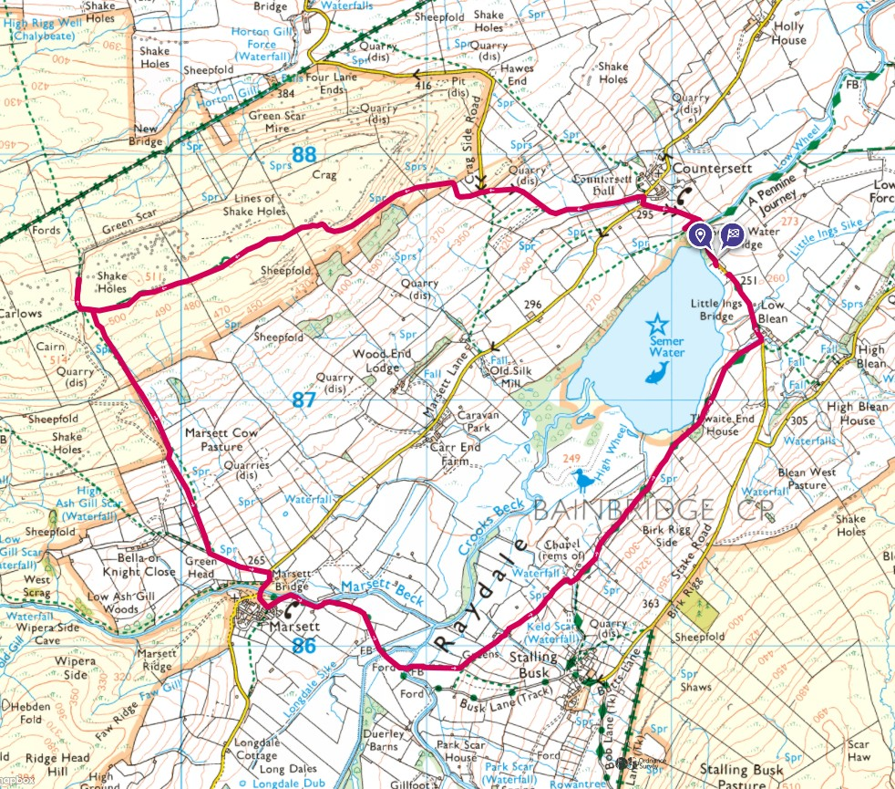
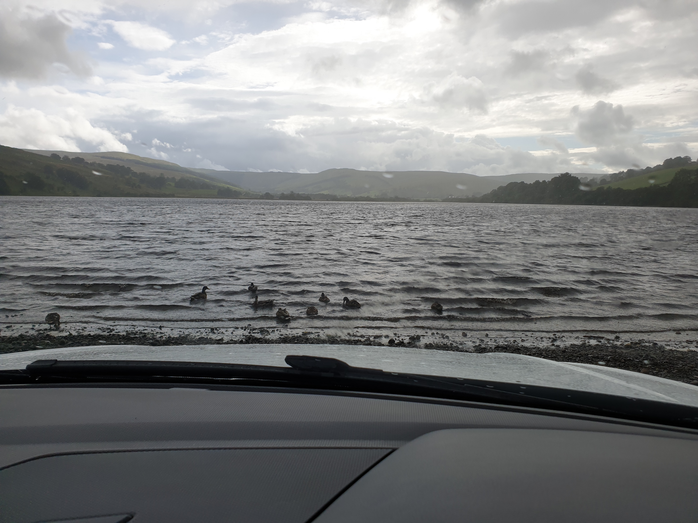
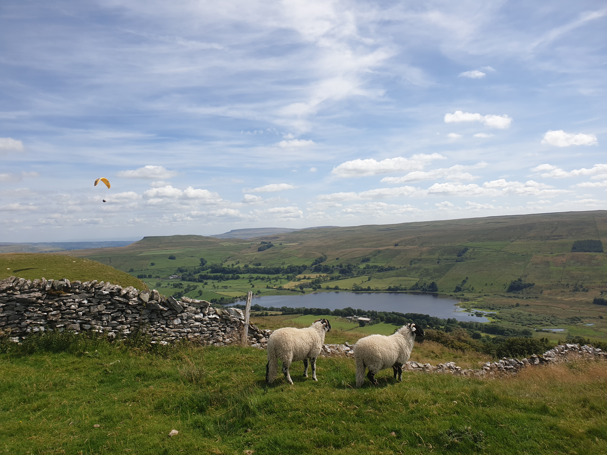
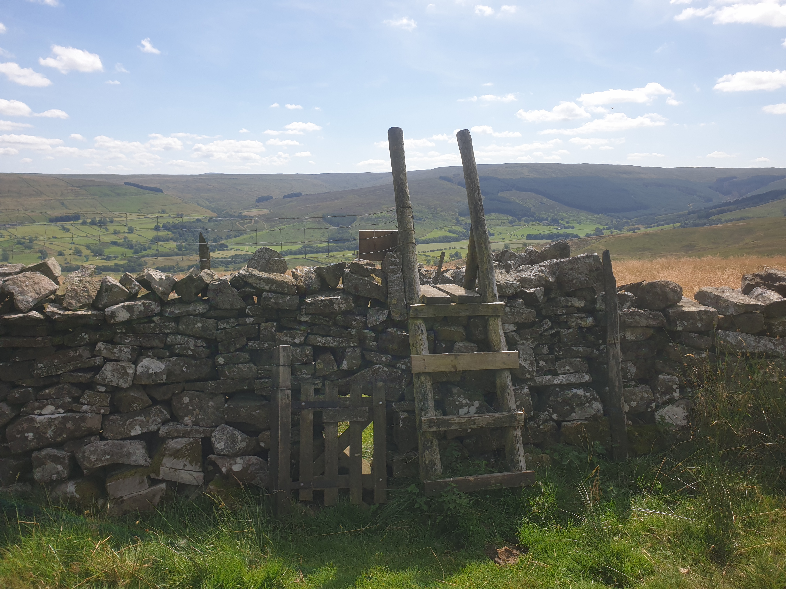

I've done Semerwater a few times, with family and friends, this time I planned a nice big loop around the water. I visited a few weeks previous to this walk where mam and I parked at Stalling Busk and walked down to the ruins of a chruch and was told of a family grave. So I thought I'd do this trip and try to find the old family grave.

It's great to park right by the shoreline here and makes for a good photo.

It was a bit busy when I got to the parking spots so I left Tiggy by the side of Semerwater.

Starting with a steep uphill trek with a great view of the lake where I met a couple of locals...

But they were more interested in the view, and the paraglider

After hiking along the top of the hill I turned right, heading north, just to see over the hill where Hawes lies.

I then turned around and headed back in the direction of Semerwater. A nice downhill walk through fields down to the village of Marsett.

Walking along the bottom of the valley following Marsett Beck then a bit of an uphill towards Stalling Busk but turning left a field before you get to the village. It is hear where the church ruins are along with nice views back across the valley where the hike had started.


It was here, in the overgrown ruins of the churchyard that I went grave digging, well, grave scraping.

Clearing the grass off a few gravestones I saw the surname Heseltine. I'd found the family grave!

The final bit of the hike is quite level as you walk along the bottom of the valley near the East bank of Semerwater. I kept to the path but others do head along the shoreline of Semerwater.